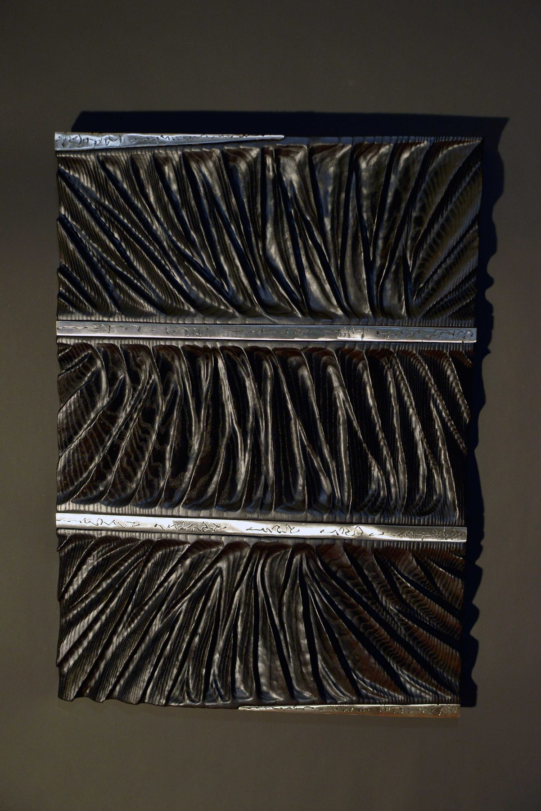

Les Arcs-en-ciel Noirs
Qui révélera l’énigme des origines du noir,lorsque dans un temps enfoui, les sept couleurs de l’arc-en-cielemportées dans un mouvement insenséroulèrent les unes contre les autres,jusqu’à l’effacement, la nudité absolue,pour rendre au noir toute sa clarté, sa puissance sauvage,pour l’affranchir de son exil.
24FM0203·65 × 47 × 4 cm·Frêne, acier